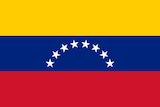

Luzmary Paz
About me
My name is Luzmary Paz and I go by Mary, I was born in Venezuela and live with my family in Paraguaná Península, Falcón State. I am currently working as Graphic Designer in Manegui Graphic Design Studio. I'm also pursuing a Professional Studies Bachelor's degree at BYU-Idaho. In my free time I love painting and playing the guitar. I love reading books and learn new things related with arts.
Falcón, Venezuela

Venezuela, country located at the northern end of South America. It occupies a roughly triangular area that is larger than the combined areas of France and Germany. Venezuela is bounded by the Caribbean Sea and the Atlantic Ocean to the north, Guyana to the east, Brazil to the south, and Colombia to the southwest and west. The national capital, Caracas, is Venezuela's primary centre of industry, commerce, education, and tourism..